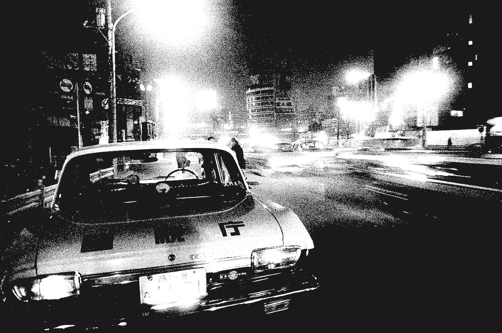
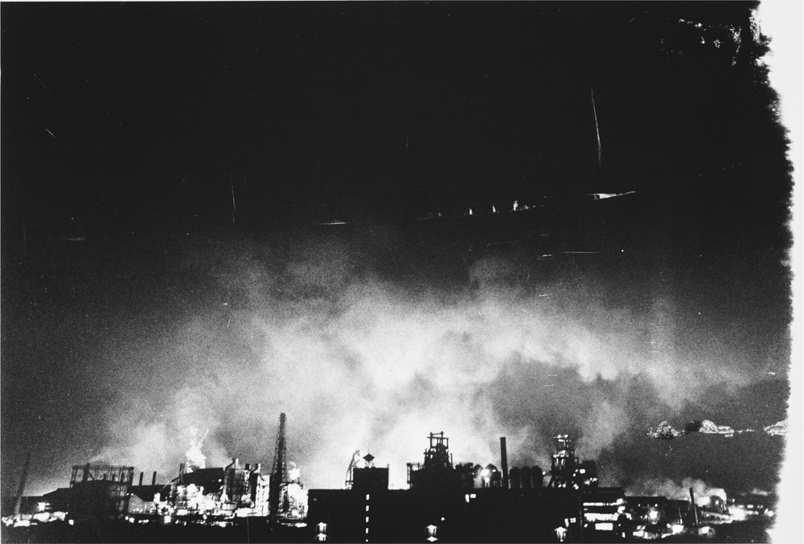

Provoke, launched in 1968, cannot be abstracted from the time and place that produced it: postwar Japan, where rapid modernization masked deep political disillusionment, linguistic collapse, and a visual order in free fall. The crisis was not theoretical—it was existential. For the artists involved, the only way to speak was to rupture the image itself.
Today, we are facing another kind of image crisis—one that looks similar on the surface, but feels fundamentally different. Our problem isn’t that images say too little, but that they say too much. In an environment shaped by AI generation, aesthetic automation, and templated communication, images have become hyper-articulate and yet profoundly hollow.
Faced with the failure of image to carry meaning, some chose to rupture it; others, to refuse the image altogether. These works won’t tell us what to do now. But they do remind us that the breakdown of visual language is not a one-time historical rupture—it’s cyclical.

Provoke was founded in Tokyo in 1968 by Daido Moriyama, Takuma Nakahira, Takahiko Okada, Yutaka Takanashi, and Koji Taki. The magazine examined Japan’s socio-political situation with a radically inventive style.
Director of the Japanese Photography Project, Tsuyoshi Ito spoke with Simon Baker, Senior Curator of Photography and International Art at London’s Tate Modern, about the legacy of the storied publication.
Simon Baker: Often when people think of Provoke, they think of the magazine. They think of quite blurry, grainy shots of street-level photography. But actually it’s varied, and there are many different approaches even within one photographer’s work.
If there is a unifying characteristic, it is an openness to chance, to experimentation, and to a radically different kind of photographic image—whether more like a screen print or a film still, an abstract painting, or however else we might think of it.
Ito: Is there a particular image that you can think of, let’s say, of Daido Moriyama’s, that you have in mind?
Baker: Nakahira’s photobook For a Language to Come (1970) defined Provoke. Even the title suggests that there’s a new visual language that’s available. Nakahira is a great writer, somebody who’s interested in theory, and writing, and thinking about people like Walter Benjamin and Eugène Atget as well as previous generations of photography theorists.
What marks out Provoke as avant-garde in the full sense is an attempt not only to make images, but to give a sense of the perspective from which the person making the images is seeing the world. It’s not photography as an objective, descriptive medium. It’s photography as an expressive, subjective, and quite radical medium.

Ito: Is there a particular image that you can think of, let’s say, of Daido Moriyama’s, that you have in mind?
Baker: Nakahira’s photobook For a Language to Come (1970) defined Provoke. Even the title suggests that there’s a new visual language that’s available... It’s photography as an expressive, subjective, and quite radical medium.
Ito: Can you put the Provoke photographers’ work in the context of what was happening in Japan at the time?
Baker: Well, the photographers associated with Provoke have very different politics... the Provoke moment encompasses all of those different aspects.
Ito: Can you relate their movement to what was happening in other parts of the world?
Baker: The global political upheavals around 1968 were happening in Europe and America... It’s made by Japanese publishers and it keys into a kind of cause célèbre on the Left in Europe, in America, and indeed in Africa and the Caribbean.
Ito: What kind of influence did Provoke have on photography inside and outside of Japan?
Baker: Soon after the Provoke moment, there were exhibitions of Japanese photography outside Japan... Even with the most famous photographers, like Nobuyoshi Araki—we, outside Japan, know relatively little of what he was actually doing in relation to publishing...